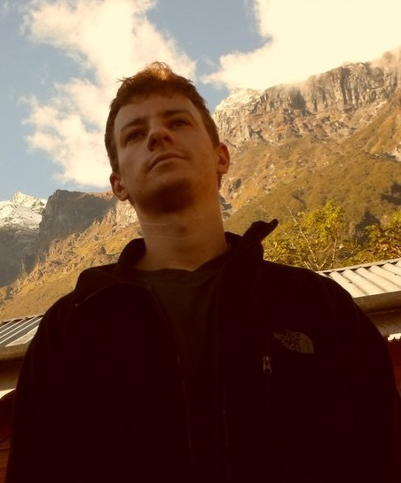
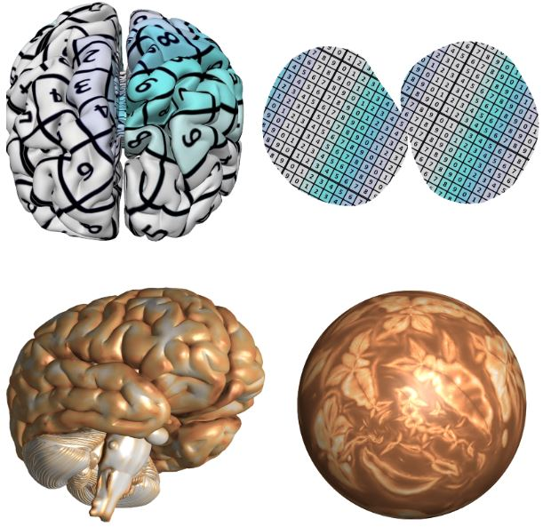
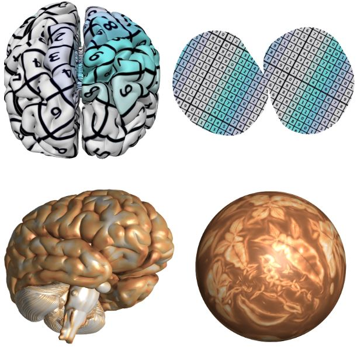
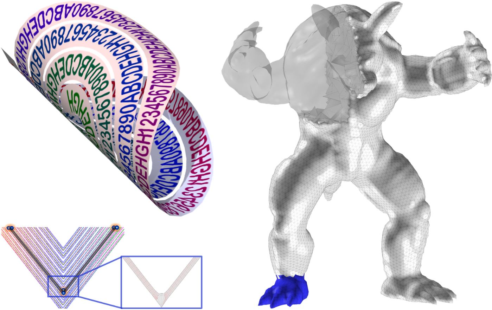
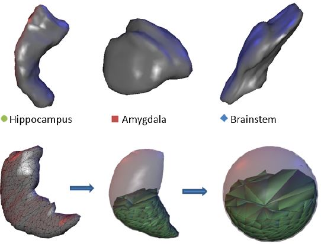
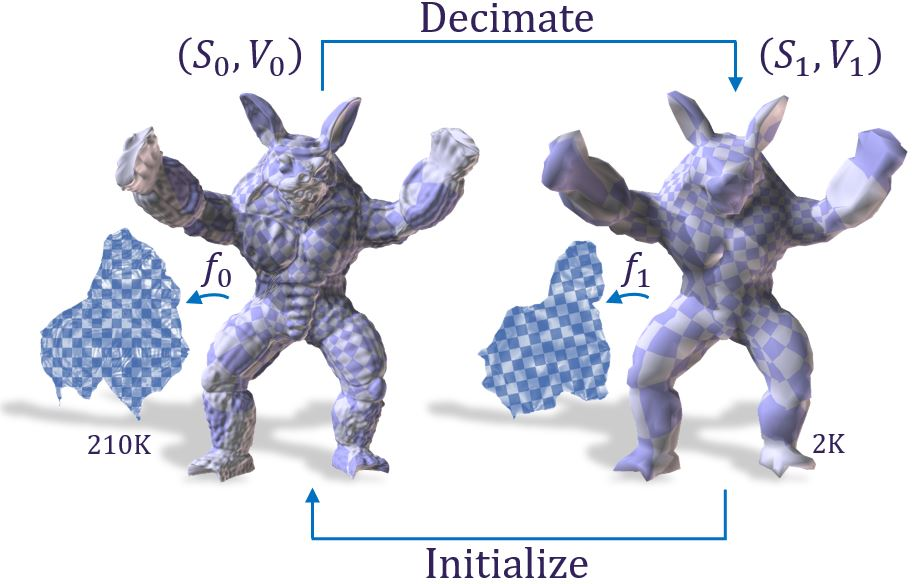
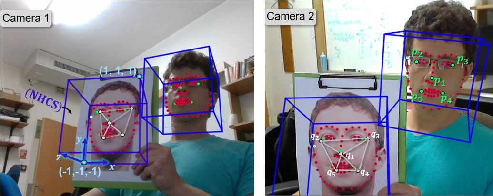
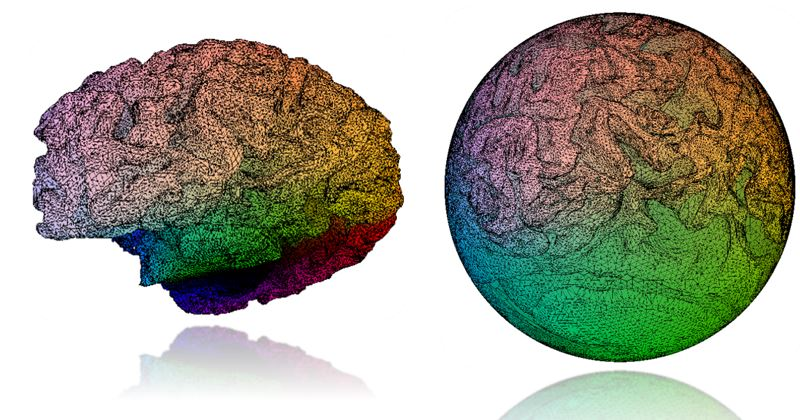

Alexander Naitsat
Email anaitsat@campus.technion.ac.il
I'm a Ph.D. student in the Department of Electrical Engineering at the Technion under the supervision of Prof. Yehoshua Zeevi. I'm holding B.Sc. in Computer Science with Mathematics and M.Sc. in Applied Mathematics from the Technion.
During my doctoral studies, I had research internships at Blink and PTC, where I worked on eye-tracking methods and geometry processing tools for 3D modeling. Prior to my graduate studies, I was part of Intel's processor design team in Haifa.
My main fields of interest are Geometry Processing, Computer Graphics and Computer Vision.
I'm a Ph.D. student in the Department of Electrical Engineering at the Technion under the supervision of Prof. Yehoshua Zeevi. I'm holding B.Sc. in Computer Science with Mathematics and M.Sc. in Applied Mathematics from the Technion.
During my doctoral studies, I had research internships at Blink and PTC, where I worked on eye-tracking methods and geometry processing tools for 3D modeling. Prior to my graduate studies, I was part of Intel's processor design team in Haifa.
My main fields of interest are Geometry Processing, Computer Graphics and Computer Vision.
Journal Papers
(hover over a paper image for a short summary)
-
-

On Inversion-Free Mapping and Distortion Minimization
-

- 

-

Geometric Approach to Detecting Volumetric Changes in Medical Images
-
Conferences- 
- 
-

A Differential Geometry Approach for Change Detection in Medical Images
International Symposium on Computer-Based Medical Systems, IEEE CBMS 2017
DOI | Paper | Presentation -
 Volumetric Quasi-Conformal Mappings
Volumetric Quasi-Conformal Mappings
VISIGRAPP 2015
Paper -
Others